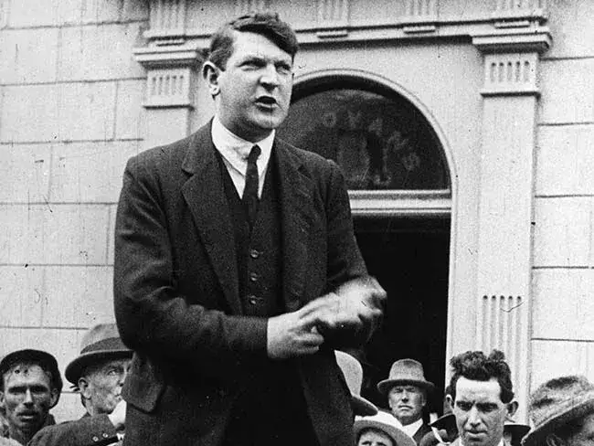

(A brief documentary on the life of Michael Collins.)(Hang up your brightest colours - The life of micheal collins)(The South Bank Show: Michael Collins (1996))
Images
(Right: Collins statue Co Cork, Ireland) (Left: Collins in uniform)

(Collins giving a speech in Dublin, 1922.)(Collins given press interview in 1921)(An eerie last photo of collins,
worried about the camera's shutter noise
as he's grabbing for his gun)